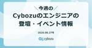

さぼてっく通信
https://note.com/cybozutech/m/mb7d0081e1358
サイボウズのエンジニアの活動をご紹介するマガジンです。
フィード
今週のCybozuのエンジニアの登壇・イベント情報 2026.09.03号
さぼてっく通信
皆さん、こんにちは！さぼてっくです🌵今週のCybozuのエンジニアの登壇・イベント情報をお届けします！この連載では、Xで共有しているサイボウズのエンジニアの活動を見逃した方にも知ってもらえるよう、週次で情報をまとめています。バックナンバーはTech Media Platformのマガジンでチェックできます！続きをみる
3日前

今週のCybozuのエンジニアの登壇・イベント情報 2026.08.27号
さぼてっく通信
皆さん、こんにちは！さぼてっくです🌵これまで担当していた貴島(@jnkykn)さんからバトンを受け取り、今週からCybozuのエンジニアの登壇・イベント情報をお届けします。よろしくお願いします！この連載では、Xで共有しているサイボウズのエンジニアの活動を見逃した方にも知ってもらえるよう、週次で情報をまとめています。バックナンバーはTech Media Platformのマガジンでチェックできます！続きをみる
10日前

【週刊】CYBOZU SUMMER BLOG FES'26 8/12号
さぼてっく通信
こんにちは！さぼてっくです。今年の、CYBOZU SUMMER BLOG FES '26（以降BLOG FES）は、7/6〜8/7の5週間に、100記事以上が参加する予定で開催されました。今日は、最終号です。BLOG FES 5週目（8/3〜8/7）の参加記事を、ご紹介します！ CYBOZU SUMMER BLOG FES '26 特設サイトサイボウズの多種多様な21チームが100本以上の記事を投稿する夏フェス「CYBOZU SUMMER BLOG FES '2summer-blog-fes.cybozu.io 続きをみる
25日前
【週刊】CYBOZU SUMMER BLOG FES'26 8/4号
さぼてっく通信
こんにちは！さぼてっくです。今年の、CYBOZU SUMMER BLOG FES '26（以降BLOG FES）は、7/6〜8/7の5週間に、100記事以上が参加する予定です。今日は、BLOG FES 4週目（7/27〜7/31）の参加記事を、ご紹介します！ CYBOZU SUMMER BLOG FES '26 特設サイトサイボウズの多種多様な21チームが100本以上の記事を投稿する夏フェス「CYBOZU SUMMER BLOG FES '2summer-blog-fes.cybozu.io 続きをみる
1ヶ月前
【週刊】CYBOZU SUMMER BLOG FES'26 7/28号
さぼてっく通信
こんにちは！さぼてっくです。今年の、CYBOZU SUMMER BLOG FES '26（以降BLOG FES）は、7/6〜8/7の5週間に、100記事以上が参加する予定です。今日は、BLOG FES 3週目（7/21〜7/24）の参加記事を、ご紹介します！ CYBOZU SUMMER BLOG FES '26 特設サイトサイボウズの多種多様な21チームが100本以上の記事を投稿する夏フェス「CYBOZU SUMMER BLOG FES '2summer-blog-fes.cybozu.io 続きをみる
1ヶ月前
【週刊】CYBOZU SUMMER BLOG FES'26 7/21号
さぼてっく通信
こんにちは！さぼてっくです。今年の、CYBOZU SUMMER BLOG FES '26（以降BLOG FES）は、7/6〜8/7の5週間に、100記事以上が参加する予定です。今日は、BLOG FES 2週目（7/13〜7/17）の参加記事を、ご紹介します！ CYBOZU SUMMER BLOG FES '26 特設サイトサイボウズの多種多様な21チームが100本以上の記事を投稿する夏フェス「CYBOZU SUMMER BLOG FES '2summer-blog-fes.cybozu.io 続きをみる
2ヶ月前
【週刊】CYBOZU SUMMER BLOG FES'26 7/14号
さぼてっく通信
こんにちは！さぼてっくです。今年も、CYBOZU SUMMER BLOG FES '26（以降BLOG FES）が始まりました！今年のBLOG FESは、7/6〜8/7の5週間に、100記事以上が参加する予定です。今日から毎週、1週間に公開されたBLOG FES参加記事をご紹介する「週刊CYBOZU SUMMER BLOG FES'26」をお届けします！ CYBOZU SUMMER BLOG FES '26 特設サイトサイボウズの多種多様な21チームが100本以上の記事を投稿する夏フェス「CYBOZU SUMMER BLOG FES '2summer-blog-fes.cybozu.io 続きをみる
2ヶ月前